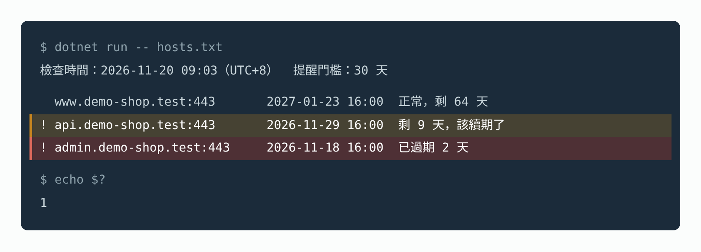
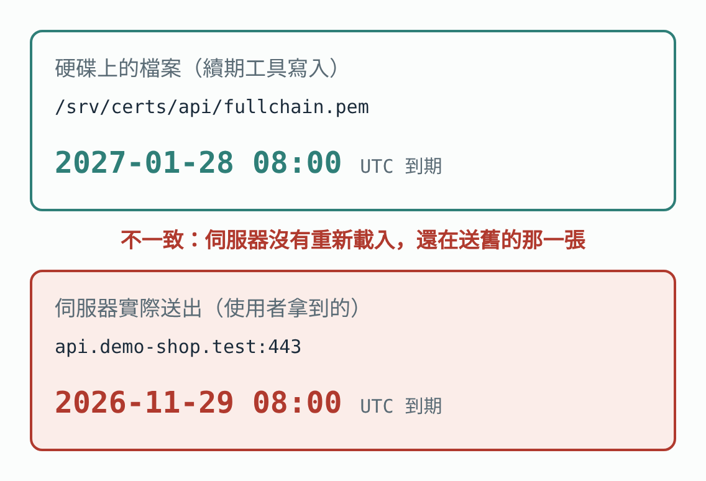

憑證到期讓網站掛掉：設了自動續期，也要每天檢查一次「實際送出」的憑證
某天早上，同事說後台登入頁打不開，瀏覽器跳出「你的連線不是私人連線」，錯誤代碼是 NET::ERR_CERT_DATE_INVALID。前台網站正常，API 也正常，只有後台壞了。
這個錯誤代碼的意思很直接：伺服器送出的 TLS 憑證不在有效期間內，多半就是過期了。換一張新憑證，網站就會恢復。比較麻煩的是下一個問題：明明設了自動續期，為什麼還會過期？其他網域會不會也快了？
以下用一個示範情境說明（網域、路徑、時間都是虛構的，網域用的是保留給測試的 .test）：一個小型網站有前台 www、API api、後台 admin 三個網域，憑證都是 90 天的免費憑證。
先把「還剩幾天」全部列出來
與其一個一個網域打開瀏覽器點鎖頭看，不如寫一支小程式，對每個網域實際建立一次 TLS 連線，把伺服器送出的憑證讀出來，算出還剩幾天。
要檢查的網域放在一個文字檔：
# hosts.txt：要檢查的網域，一行一個（預設埠號 443，其他埠號寫成 主機:埠號）
www.demo-shop.test
api.demo-shop.test
admin.demo-shop.test
程式本體（.NET 8 主控台程式，只用內建類別，不需要另外裝套件）：
using System.Net.Security;
using System.Net.Sockets;
using System.Security.Cryptography.X509Certificates;
// 用法：dotnet run -- hosts.txt [提醒門檻天數，預設 30]
// hosts.txt 一行一個「主機名稱」或「主機名稱:埠號」，# 開頭是註解
// 結束代碼：全部正常是 0，任何一台需要處理是 1（讓排程判斷要不要通知）
var warnDays = args.Length > 1 ? int.Parse(args[1]) : 30;
var tw = TimeSpan.FromHours(8); // 臺灣沒有日光節約時間，固定 UTC+8
var now = DateTimeOffset.UtcNow;
var allOk = true;
Console.WriteLine($"檢查時間：{now.ToOffset(tw):yyyy-MM-dd HH:mm}（UTC+8） 提醒門檻：{warnDays} 天");
Console.WriteLine();
foreach (var raw in File.ReadAllLines(args[0]))
{
var line = raw.Trim();
if (line == "" || line.StartsWith('#')) continue;
var parts = line.Split(':');
var host = parts[0];
var port = parts.Length > 1 ? int.Parse(parts[1]) : 443;
var (notAfter, status, ok) = await CheckAsync(host, port, now, warnDays);
allOk &= ok;
var expires = notAfter is null ? "-" : notAfter.Value.ToOffset(tw).ToString("yyyy-MM-dd HH:mm");
Console.WriteLine($"{(ok ? " " : "! ")}{$"{host}:{port}",-28} {expires,-17} {status}");
}
return allOk ? 0 : 1;
static async Task<(DateTimeOffset? NotAfter, string Status, bool Ok)> CheckAsync(
string host, int port, DateTimeOffset now, int warnDays)
{
using var cts = new CancellationTokenSource(TimeSpan.FromSeconds(10));
X509Certificate2? cert = null;
var errors = SslPolicyErrors.None;
try
{
using var tcp = new TcpClient();
await tcp.ConnectAsync(host, port, cts.Token);
using var ssl = new SslStream(tcp.GetStream(), leaveInnerStreamOpen: false);
await ssl.AuthenticateAsClientAsync(new SslClientAuthenticationOptions
{
// SNI：同一個 IP 掛多個網域時，伺服器靠這個決定要回哪一張憑證
TargetHost = host,
// 不管驗證結果都先收下，才讀得到「已經過期」的憑證；這支程式只讀憑證，不送任何資料
RemoteCertificateValidationCallback = (_, c, _, e) =>
{
if (c is not null) cert = new X509Certificate2(c);
errors = e;
return true;
}
}, cts.Token);
}
catch (Exception ex)
{
return (null, $"連線失敗：{ex.Message}", false);
}
if (cert is null) return (null, "沒有取得憑證", false);
var notAfter = new DateTimeOffset(cert.NotAfter.ToUniversalTime());
var days = (notAfter - now).TotalDays;
if (days <= 0)
return (notAfter, $"已過期 {(int)Math.Ceiling(-days)} 天", false);
if (errors.HasFlag(SslPolicyErrors.RemoteCertificateNameMismatch))
return (notAfter, "憑證上的網域名稱和主機不符", false);
if (errors.HasFlag(SslPolicyErrors.RemoteCertificateChainErrors))
return (notAfter, "憑證鏈驗證失敗（常見原因：少了中繼憑證）", false);
if (days < warnDays)
return (notAfter, $"剩 {(int)Math.Floor(days)} 天，該續期了", false);
return (notAfter, $"正常，剩 {(int)Math.Floor(days)} 天", true);
}
有兩個細節值得說明：
- 驗證回呼一律回傳
true。 正常的程式不該這樣寫，因為這等於接受任何憑證。這裡這樣做，是因為憑證過期時驗證一定失敗，如果直接拒絕連線，就讀不到到期日了。這支程式只讀憑證、不傳任何資料，驗證結果另外記在errors裡判斷，所以這樣寫是安全的。不要把這段搬到會傳送資料的程式裡。 TargetHost一定要帶網域名稱。 很多主機用同一個 IP 掛好幾個網域，伺服器是看 TLS 握手時的網域名稱（SNI）決定要回哪一張憑證。只用 IP 連線，讀到的可能是別的網域的憑證。
在示範環境跑一次：

後台過期在預期之內，那是我們已經知道的問題。真正要緊的是第二行：API 只剩 9 天，可是自動續期明明有在跑。
原因一：有網域根本不在自動續期裡
示範情境裡，後台網域是後來才加的，當時手動申請了一張憑證，沒有加進自動續期的設定。90 天後，它就照時間過期了。
這種漏網之魚很常見：測試站、舊網域轉址、後來加上的子網域。自動續期只會續它知道的那幾張。解法很單純：每加一個網域，就同時加進續期設定和上面的 hosts.txt。
原因二：檔案續期了，伺服器還在用舊的
API 的情況比較隱蔽。到主機上看憑證檔，到期日是明年一月，看起來沒問題；但從外面連進來，拿到的卻是 11 月底到期的那一張：
$ openssl x509 -in /srv/certs/api/fullchain.pem -noout -enddate
notAfter=Jan 28 08:00:00 2027 GMT
$ openssl s_client -connect api.demo-shop.test:443 -servername api.demo-shop.test < /dev/null 2>/dev/null | openssl x509 -noout -enddate
notAfter=Nov 29 08:00:00 2026 GMT

原因是網頁伺服器（例如 nginx、Apache）在啟動或重新載入設定時，才會把憑證讀進記憶體。續期工具換掉檔案之後，如果沒有接著讓伺服器重新載入，伺服器就會一直送舊的那一張，直到它過期。以 certbot 為例，如果不是用 nginx 或 Apache 外掛申請（例如用 webroot 方式），就要自己設定 --deploy-hook，在續期成功後執行 systemctl reload nginx 之類的指令。（本文環境沒有實際執行 certbot，這段是依工具文件的說明，請以你使用的版本為準。）
這也是為什麼檢查程式要連線到伺服器讀憑證，而不是讀硬碟上的檔案：使用者拿到的是伺服器送出的那一張，檔案再新都沒用。
修正之後（示範環境裡是讓 API 服務改用新檔案重新啟動、後台換上新憑證），再跑一次：
$ dotnet run -- hosts.txt
檢查時間：2026-11-20 09:04（UTC+8） 提醒門檻：30 天
www.demo-shop.test:443 2027-01-23 16:00 正常，剩 64 天
api.demo-shop.test:443 2027-01-28 16:00 正常，剩 69 天
admin.demo-shop.test:443 2027-02-18 08:00 正常，剩 89 天
$ echo $?
0
讓它每天自己跑
程式的結束代碼已經分好了：全部正常是 0，有任何一個網域需要處理是 1。排程只要看結束代碼決定要不要通知：

Linux 可以用 cron，例如每天早上 8 點 10 分跑一次，結束代碼不是 0 才寄信（下面這行沒有在本文環境實際排程，mail 要換成你主機上能用的通知方式）：
10 8 * * * cd /opt/certcheck && dotnet CertCheck.dll hosts.txt > last.txt || mail -s "憑證檢查需要處理" you@example.com < last.txt
Windows 則可以用工作排程器執行，再依結束代碼觸發通知（本文環境沒有 Windows，這部分沒有實際驗證）。
有兩件事要注意：
- 在「外面」檢查。 最好從另一台機器跑，用的 DNS 要跟一般使用者一樣。在網站主機自己身上檢查，可能因為 hosts 設定或內部網路，連到的不是使用者連到的那一台。
- 30 天的門檻要配合憑證效期。 90 天的憑證通常在剩 30 天左右自動續期，所以剩不到 30 天還沒換，就代表續期出了問題。如果你的憑證效期比較短，門檻要跟著調。
為什麼現在更需要這支程式
過去 Let's Encrypt 會在憑證快到期時寄信提醒，但這項服務已經在 2025 年 6 月停止，不能再靠它當最後一道防線。
另一方面，CA/Browser Forum 已經通過決議，公開信任的 TLS 憑證最長效期會分階段縮短：2026 年 3 月 15 日起最長 200 天，2027 年 3 月 15 日起 100 天，2029 年 3 月 15 日起 47 天。效期越短，續期越頻繁，續期流程中任何一個環節沒接好，出事的機會也越多。
本文的 C# 程式、三次檢查輸出（含結束代碼）與
openssl指令的輸出，都在 Ubuntu 24.04、.NET SDK 8.0.134 實際執行過，輸出與文中相同。示範用的憑證由本機自建的測試 CA 簽發，三個網域都指向本機上的 TLS 服務。cron 排程、certbot 與 Windows 工作排程器的部分沒有實際執行。
學到什麼
- 憑證過期不是突然發生的，到期日從申請那天就寫在憑證上了。缺的不是資訊，而是有人每天去看。
- 「自動續期有在跑」不等於「使用者拿到新憑證」。要檢查伺服器實際送出的憑證，而不是硬碟上的檔案。
- 檢查程式要把「連不上」「名稱不符」「憑證鏈錯誤」也當成問題回報，這些跟過期一樣會讓使用者看到警告頁。
- 每加一個網域，就同時加進續期設定和檢查清單。
如果你的網站曾經因為憑證過期掛掉，或不確定續期流程有沒有接好，問達工作室可以幫你把檢查和提醒設起來，讓下一次在 30 天前就知道。